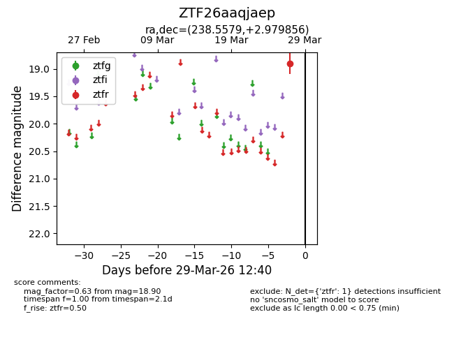
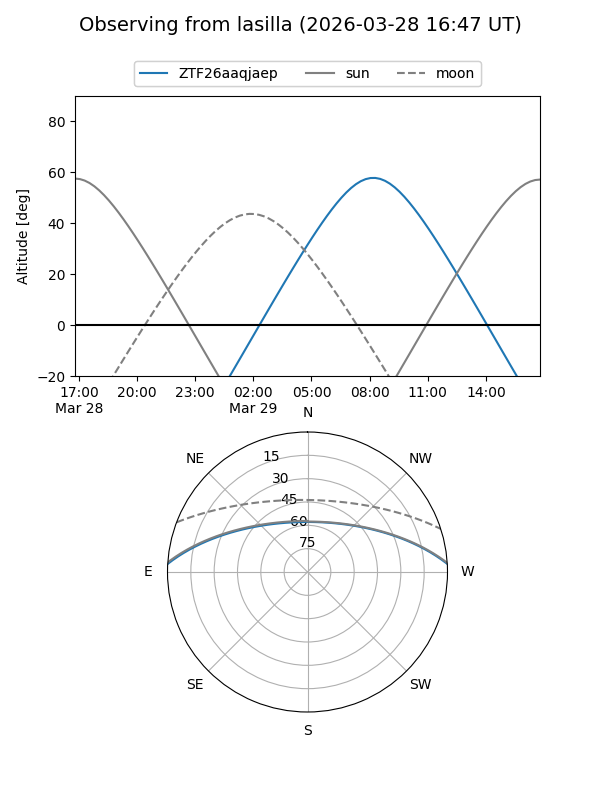
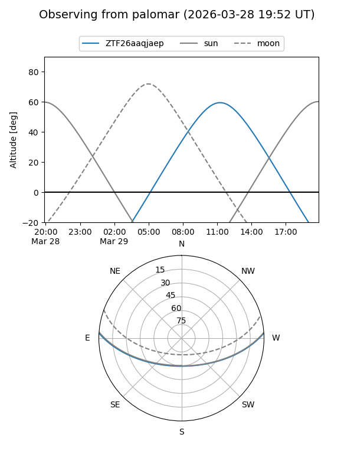

ZTF26aaqjaep
Target ZTF26aaqjaep at 2026-03-29 12:43
Aliases and brokers:
FINK: link
Lasair: link
ALeRCE: link
alt names
ZTF26aaqjaep (ztf,fink_ztf)
Coordinates:
equatorial (ra, dec) = 238.5579,+2.97986
equatorial (HMS+DMS) = 15:54:13.90,+02:58:47.48
galactic (l, b) = (12.1118,+40.12536)
Flags:
Photometry:
last ztfr=18.90
1 ztfr detections
Lightcurve

Visibility


Additional plots